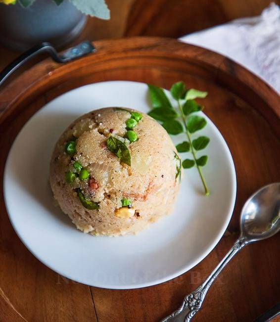

Vegetable Upma
⭐⭐⭐⭐⭐ 4.7 Rating | ⏱ 25 Minutes | 🍽 4 Servings
Category
Breakfast
Difficulty
Easy
Calories
270 kcal
Cooking Style
South Indian
📋 Ingredients
- 1 Cup Rava (Semolina)
- 2 tbsp Oil or Ghee
- 1 tsp Mustard Seeds
- 1 tsp Urad Dal
- 1 tsp Chana Dal
- 1 Onion (Finely Chopped)
- 1 Green Chilli (Chopped)
- 1 tsp Grated Ginger
- 8–10 Curry Leaves
- 2 tbsp Carrot (Chopped)
- 2 tbsp Green Peas
- 2½ Cups Water
- Salt to Taste
- 2 tbsp Coriander Leaves
- 1 tbsp Lemon Juice (Optional)
🍳 Required Utensils
- Frying Pan or Kadai
- Spatula
- Measuring Cup
- Knife
- Cutting Board
- Serving Bowl
📖 Introduction
Vegetable Upma is a popular South Indian breakfast made from roasted semolina (rava), vegetables, and aromatic spices. It is light, healthy, and easy to prepare, making it a perfect breakfast or evening snack.
🔬 Principle
Roasted semolina absorbs hot water during cooking, becoming soft and fluffy. Tempering with mustard seeds, curry leaves, ginger, and vegetables enhances the aroma and taste.
👨🍳 Procedure
- Dry roast the rava until light golden and aromatic.
- Keep it aside.
- Heat oil or ghee in a pan.
- Add mustard seeds and allow them to crackle.
- Add urad dal and chana dal until golden.
- Add curry leaves, ginger, and green chilli.
- Add onions and sauté until transparent.
- Add carrots and green peas and cook for 2–3 minutes.
- Pour water into the pan and add salt.
- Bring the water to a boil.
- Slowly add roasted rava while stirring continuously.
- Cook for 3–5 minutes until the water is absorbed.
- Add lemon juice and coriander leaves.
- Mix gently and serve hot.
⚠ Precautions
- Roast the rava before cooking.
- Add rava slowly to avoid lumps.
- Keep stirring continuously.
- Maintain the correct water ratio.
- Cook on low flame after adding rava.
💡 Chef Tips
- Add roasted cashews for extra crunch.
- Use ghee for richer flavour.
- Add beans and capsicum for more nutrition.
- Serve with coconut chutney.
- Garnish with fresh coriander.
🥗 Nutrition Facts
| Nutrient | Amount |
|---|---|
| Calories | 270 kcal |
| Protein | 7 g |
| Carbohydrates | 42 g |
| Fat | 8 g |
| Fiber | 4 g |
🍽 Serving Suggestions
- Serve with Coconut Chutney.
- Enjoy with Sambar.
- Pair with Pickle.
- Serve with Filter Coffee.
- Garnish with roasted cashews.
🌿 Health Benefits
- Provides instant energy.
- Contains dietary fiber.
- Vegetables provide essential vitamins.
- Easy to digest.
- Healthy homemade breakfast option.
✅ Result
The prepared Vegetable Upma should be soft, fluffy, aromatic, and free from lumps. It should have a balanced flavor with crunchy vegetables and mild spices, making it a delicious and nutritious South Indian breakfast.
🎥 Watch Recipe Video
Learn the complete recipe by watching the step-by-step video.
▶ Watch on YouTube